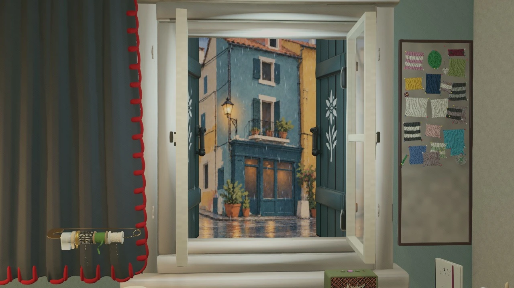

A single-player repair game set at a seated craft desk. Two commissions connect an owner’s request to the visible repair of a familiar toy.
Players inspect damage, prepare tools, restore the material and check the result before returning the parcel. Close views support precise handwork while the room keeps tools and reference material in a consistent location.
Game design scope. The commission loop, ordered craft tasks, technique guidance, constrained choices, gentle error recovery and character responses.
Technical art scope. Textile materials, repair geometry, live thread, deformation and attachment stability, local interaction highlights, lighting and runtime asset integration.
The game uses five props authored with Alice Textile Studio. The Toolkit handles their fabric and craft geometry; this project connects them to camera framing, tool pickup, tutorials, state and save restoration.
1 · Window & sill. Open the glass and shutters; hang the sign and receive parcels.
2 · Work mat. Inspect the doll and carry out the repair.
3 · Organiser. Pick up and return the physical tools.
4 · Handbook. Consult the stitch technique for the current task.
5 · Pinned note. Keep the owner’s request and repair checklist available.
The player’s main task is to understand what is damaged and carry out a plausible order of repair. Filling precedes closure; stitches precede tension; a knot precedes the final trim. The next tool becomes relevant when the current material state is ready for it.
Choice exists inside that structure. Alice allows thread colour, a replacement button, two or four holes and a compatible fastening pattern. Panda asks for its original crown and cheek sequin to be retained. The commissions constrain what must be repaired while allowing local choices about its finish.
The workshop is a functional workspace. Tool selection returns attention to the organiser; close cameras bring a hole or fabric edge into view; the pinned note keeps the request accessible without turning every instruction into a permanent overlay.
| Commission | Introduced | Reused / combined |
|---|---|---|
| Alice | Fill and pack a tear; read the ladder-stitch lesson; thread a needle. | Stitch, tension, knot and trim, then apply the same preparation to a button. |
| Panda | Stabilise live loops, recover rows, reposition retained accessories. | Reuse filling and ladder closure; sew crown loops and a central-hole sequin; inspect three repairs. |
The handbook explains the technique, the commission note explains the current objective, and local feedback explains the next valid action. These three layers serve different reading needs. Reopening a note does not silently complete a lesson or prepare a tool.
Further commission designs extend this progression through patchwork, darning, basting and backstitch before combining techniques. Those five designs remain proposals; Alice and Panda are the two implemented commissions.
ReStory connects repair work with the people who bring objects into the shop. Its dismantle–clean–replace–reassemble sequence provides a useful comparison for making the condition of an object determine the next action.
Alice applies that clarity to soft materials: inspect a tear, restore volume, close the cloth and secure the thread. Its craft depends on cloth edges, apertures and tension rather than interchangeable electronic parts.
Assemble with Care, from the studio behind Monument Valley, links the repair of valued possessions to their owners’ lives. It provides a useful reference for letting the object carry narrative context.
Here, that context becomes a concrete repair requirement: preserve Alice’s smile and old ribbon, and reuse Panda’s crown and original sequin. The repaired toy responds before the parcel is returned, giving the material result a place in the story.
Mina is moving and facing a new school. Her request preserves the doll’s familiar smile and old ribbon while repairing the damaged eye area. The task joins three material problems: lost stuffing, an open cloth tear and a missing button eye.
| Stage | Action and result |
|---|---|
| Volume | Add four portions of cotton, then pack the filling. Packing redistributes existing volume. |
| Cloth | Read the lesson, choose thread and thread the needle; sew six ladder-stitch groups. |
| Finish | Cut the working tail, tension the seam, secure the knot and trim the remaining tail. |
| Eye | Choose a two- or four-hole button; sew four passes per hole pair, then finish and tug-test. |
The chosen eye can differ from the original black button. That difference records a deliberate repair choice. After inspection, Alice sits up and greets the player; the story appears after the response, and dispatch completes the commission.
Panda belongs to a bakery birthday memory. Its damaged ear, loose crown and displaced cheek sequin each require a different treatment. The request keeps the old accessories, so the work centres on recovery and reattachment.
| Stage | Action and result |
|---|---|
| Ear | Stabilise two loop markers, recover six rows, add three cotton portions and make two packing presses. |
| Closure | Sew six ladder groups, tension the seam, secure two knots and trim the tail. |
| Crown | Lift and reposition the original crown; sew four attachment loops, secure two knots and tug-test. |
| Cheek | Position the original sequin; make three central-hole passes, secure two knots and trim. |
Final inspection records three distinct repair points. Repeating one inspection cannot complete the others. Only after all three pass does Panda respond and move into the return-parcel sequence.
The entry and exit are stored in the repair surface’s local frame. A hit on the deformed doll is mapped back into that original frame, so filling or posing does not change the meaning of a stored stitch. Finite coordinates, separation and region checks run before the count advances.
A preview is separate from a committed stitch. Cancelling halfway through removes the preview while retaining accepted stitches. Input is gated while the needle or camera is moving, preventing a second click from skipping the physical sequence.
The loose thread uses 28 Verlet / position-based nodes with pinned endpoints, bounded substeps, gravity, length and bending constraints. Cloth clearance keeps the visible strand outside the configured repair surface. The result is resampled into 82 render points with a six-sided tube.
The cloth exit and needle or held end drive the simulation. Cutting changes the working tail; tension closes the seam; the knot and final trim resolve the remaining thread. This is a constrained repair visual, with no general rope self-collision system.
Pull distance controls the tension value; speed detects a sharp yank. In Alice’s standard gesture, the valid band is 0.72–0.88 and must remain stable for 0.28 seconds. A tap adds no tension. Pulling too far or too fast asks the player to ease back and settle rather than discarding the repair.
The click alternative starts a gentle pull and then waits for a separate confirmation. Relaxed craft limits the gesture while retaining the same completion gate.
withinBand = value >= 0.72f && value <= 0.88f;
ready = withinBand && stableTime >= 0.28f && !tooFast;Rule summary · AliceThreadTension.cs
The hook must meet the loop horizontally, vertically and at a controlled speed. Six recovered rows form a longer sequence, and later rows move faster. Missing the opening leaves the current row available to retry; accepted rows remain recorded.
public bool CanCatch => Active
&& Mathf.Abs(LoopX - ToolX) < .075f
&& Mathf.Abs(Height - LoopY) < Aperture * .76f
&& Mathf.Abs(Speed) < .60f;WorkshopLoopGame.cs · alignment gate
Discrete input holds the aligned condition until the player confirms it. The same target is used, with timing pressure removed.
A two-hole button needs one pair of four passes; a four-hole button needs two pairs, eight passes in total. The first valid pair establishes the available parallel or cross arrangement. Two distinct real apertures are required; clicking the same hole or missing the button does not add a stitch.
Thread colour, button selection and hole-pair structure affect the visible result. They share the preparation and finishing rules already introduced during the cloth repair.
| Player situation | Response | State effect |
|---|---|---|
| Wrong region or repeated hole | Local feedback identifies the required surface or aperture. | No stitch is committed. |
| Half-finished pass | Cancel clears the pending needle path. | Previously confirmed stitches remain. |
| Fast or excessive pull | Ease back and hold steadily. | The current tension step stays open. |
| Missed loop | Align the tool and retry this row. | Completed rows remain recorded. |
Local highlights follow real holes, cloth edges and tool handles. Mouse and discrete confirmation reach the same action logic. Remapping, 100% / 125% / 150% text scale, hint history, reduced motion and relaxed craft support different input and reading needs.
The physical doll establishes the head-to-body ratio, button-eye placement, hair volume and clothing silhouette. The digital preparation preserves the original visible form while making the mesh suitable for close inspection, filling and pose changes.
The volume review retained the original 2,384 skin triangles, closed 184 open garment edges and welded shared boundaries. Weight transitions at cuffs and waist were smoothed so seated and waving poses did not expose gaps. Six presentation poses were checked alongside the repair view.
The face remains broad and readable while hair carries a stronger yarn structure. Clothing uses distinct cloth and binding regions. Thread diameter, seam contrast and local camera distance are coordinated so a valid stitch can be read against the underlying weave.
Material regions also separate what the repair changes. Filling affects volume; the seam closes the tear; button geometry and thread show the selected eye. These results are represented independently rather than baked into one final texture.
A shape-specific mesh deformation, skeleton and low-resolution volume proxy control the plush response. Head volume grows mainly toward the back, protecting the face, eye position and repair anchors. Packing redistributes the existing filling instead of adding another portion.
This focused model gives a controllable response to the configured repair states. It does not simulate every cloth fibre or solve unrestricted soft-body physics.
The same mapping supports a stable seam while the head fills and the character moves. Confirmed entry/exit records remain unchanged; their visible positions are rebuilt through the current repair transform. Needle animation and thread endpoints use that same reference.
Rain at 13:00, recorded in the game with music off. With both windows open, the outdoor patter sounds brighter and closer. Closing just the glass muffles it again.

Click the wall clock to set the time in 15-minute steps and choose clear, overcast or rainy weather. The camera stays in place with both windows open so you can compare the shopfront light and its reflection on the paving.
Panda’s knitted regions use a thin shell envelope over the current deforming mesh. The shader clips each layer by the knit height pattern and limits the contribution by surface orientation. The envelope follows tears, compression and ear motion because it draws the same private animated mesh.
Only the knit materials participate; resin accessories remain separate. Projected thickness determines visibility and a 4–12 layer count per visible surface. The volume fades between 1 and 1.8 pixels, leaving the normal detail at smaller screen sizes. Frustum culling and instancing avoid drawing every layer everywhere.
Close to the face, the knit layers give the eye patch a soft outline beside the smooth button. At a distance the extra layers fade, while the base fabric keeps its colour and weave.
A fullscreen pass builds pencil-like strokes from image brightness. Different line directions enter progressively in darker values, with derivative smoothing and restrained paper grain. This treatment responds to luminance; it is not a depth- or normal-based edge detector.
The pass supports the drawn room and paper presentation while keeping the repair surface readable. Its strength is controlled independently of the textile materials.
Each pane reflects the observer camera across its current plane. An oblique clipping plane prevents geometry behind the glass from leaking into the reflected view. Per-observer textures, half-resolution rendering, a 1,024 px cap and a recursion guard bound the extra rendering work.
The reflection camera skips post-processing so the pane is not graded twice. The pane transform and observer projection determine the reflection rather than a flipped copy of the player’s screen.
The work mat supports the repair surface; the organiser provides pickup points; the handbook opens technique lessons; the curtain retains its window placement; the sign keeps its take, hang and return actions. Visual replacement is tested together with those existing behaviours.
Confirmed progress is durable; a pending drag or half stitch is temporary. Saves write to a temporary file, flush and replace the current file with backup and revision checks. Preferences are stored separately from repair progress.
Restoration reconstructs the visual state from confirmed data rather than relying on the previous frame. The test cases include needle cancellation, mid-seam reload, a finished commission and restoration of parcel phases.
input → validated action → confirmed progress
↓
save record
↓
geometry + tools + story phaseRuntime ownership · WorkshopSaveService and commission state
| Scope | Evidence |
|---|---|
| Alice journey | Opening through dispatch; four cotton portions, cloth closure, four-hole fastening, finishing and completion reload. |
| Panda journey | Opening through dispatch; loop recovery, all three repairs, cancellation paths, mid-seam reload and three independent inspections. |
| Rendering | Current English captures; Edit / Play parity and controlled knit, hatching and glass comparisons. |
| Character | Garment seams, repair anchors, filling and seated / waving presentation. |
| Input | Mouse paths and discrete actions; bilingual accessibility checks. Controller checks used virtual input. |
The current runtime baseline is macOS with Unity 6.3 / URP 17.3. Automated action and assertion counts describe specific scripted runs, not participant studies, hardware-controller coverage or performance benchmarks.
| Issue | Resolution | Result to inspect |
|---|---|---|
| Edit / Play appearance changed | Preserve authored light and volume values; apply relative atmosphere changes. | Evening and rainy night views in Rendering. |
| Garment gaps during presentation | Close open edges, weld shared seams and smooth weight transitions. | Prepared form and completion transition in Character. |
| Repair progress and visible thread diverged | Separate pending gestures from accepted local records. | Entry / exit, cancellation and final trimming in Interaction. |
| Panda details were shown only from stage checkpoints | Capture a complete isolated commission and reload its final state. | Independent final inspections, response and dispatch. |
Full game documentation →Alice Textile Studio →Asset and music credits →